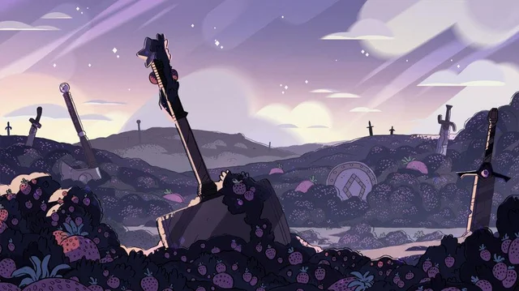
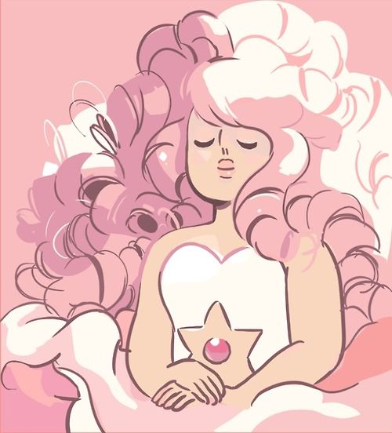

Homeworld e a Terra
Em um planeta distante uma raça alienígena em constante progresso coloniza planetas para a perpetuação de sua raça, sugando toda a vida existente para a criação das novas Gems. As Gems tem um corpo formado de luz, e seus corações são pedras preciosas, como ametista, rubi ou safira etc, que guardam a essência de suas almas. Assim não envelhecem ou precisam comer.
O mais alto escalão das Gems, eram as diamantes. Onde existiam quatro irmãs no poder, cada uma com uma característica e uma cor específica. Nesse império Pink Diamond, a menor das irmãs, que vivia brincando em seu jardim espacial, decidiu que assim como suas outras irmãs queria uma colônia. E com muita relutância ganhou um planeta para colonizar, a Terra.

Durante a colonização da Terra, surgiu uma soldada que viu a riqueza e beleza do planeta, embora os seres humanos também o destruissem aos poucos.
Rose Quartz como era chamada, liderou a maior rebelião Gem contra o império, as Crystal Gems, para assim libertar nosso mundo das garras da Diamante Rosa. A vitória veio atráves da morte de Pink Diamond, contudo esse fato causou grande comoção no império, e fez com que as outras irmãs, em sua cólera, lança-se um poder que corrompeu e monstrificou quase todas as Gems no planeta.

Após sobreviver ao ataque e a guerra, Rose e seu exército que agora era composto por apenas 2 soldados, Garnet e Pérola. Poderiam viver em paz, assim fazendo com que o planeta fosse preservado por mais de 4000 anos. Até encontrou um humano por quem se apaixonou e tiveram um filho Steven. E rose abriu mão de sua vida, para o nascimento de steven que agora possui à pedra e os poderes de sua mãe.
Steven Universo
Steven é um garoto que herdou uma grande responsabilidade, afinal ele carrega a pedra de sua mãe. Assim é considerado uma Gem, a assassina de Pink. Durante o decorrer da série, steven protege a Terra assim como sua mãe. Ele busca ficar forte para conseguir lutar pelo planeta, e em sua jornada ele aprende diversos valores como empatia, lealdade, honestidade. E ensina outros personagens como isso é importante para viver, como o respeito é uma via de mão dupla e como esse amadurecimento deveria ser comum em todas as sociedades.